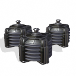

Granary
The granary, being one of the first settlement improvements in human
civilization, is also one of the first facilities that are built on
a Martian colony.
By keeping grain in necessary heat and moisture conditions this colony
improvement allows more food to be stored, thus increasing the
efficiency of the consumption.
